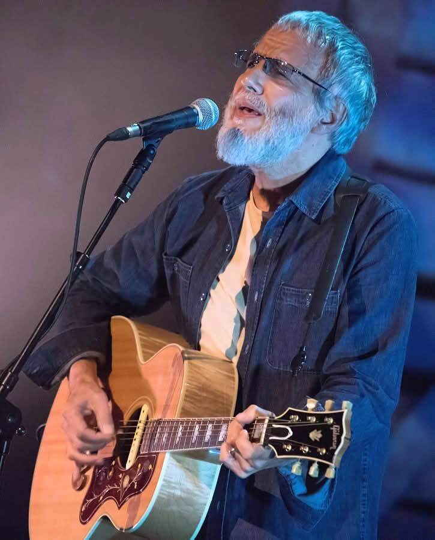

Beyond the Books: My (Languid) Pursuits
With dysfunctional academic perfectionism plaguing my entirety of adolescent and adult life, cultivating a hobby outside of scholarly pursuits has, unfortunately, proven to be a truly herculean task, and one in which I've gloriously, perhaps even spectacularly, failed.
However, whatever modicum of effort I do expend in disengaging my overdriven zeal to understand, I manage to do so in a very unashamedly Wodehousian and Seinfeldian manner. A delightful debauchery of TV and music from the 70s, 80s, and 90s forms the staple of my 'hobby-life,' offering a comforting embrace of nostalgia. The remainder of this proudly presented, albeit rather skeletal, personality beyond academics is filled by the curious world of mathematics-themed infotainment on YouTube.
Music Tastes
"There is no surer foundation for a beautiful friendship than a mutual taste in literature."
― P.G. Wodehouse
In this spirit, with "literature" expanding to include music, TV, and YouTube as well, I feel the whole of my music interests can in a rudimentary manner be summarized by three artists who've had an immense role in shaping my..., for lack of a better word, playlist!—Billy Joel, Cat Stevens, and Colin Hay.

Cat Stevens (Yusuf Islam). Photo by Bryan Ledgard. Licensed under CC BY 2.0.
It's not exactly mountaineering or mastering a musical instrument, but it's *my* brand of leisurely engagement – a humble retreat from the rigors of economic theory.